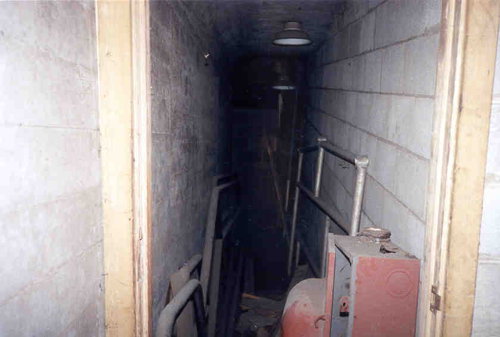
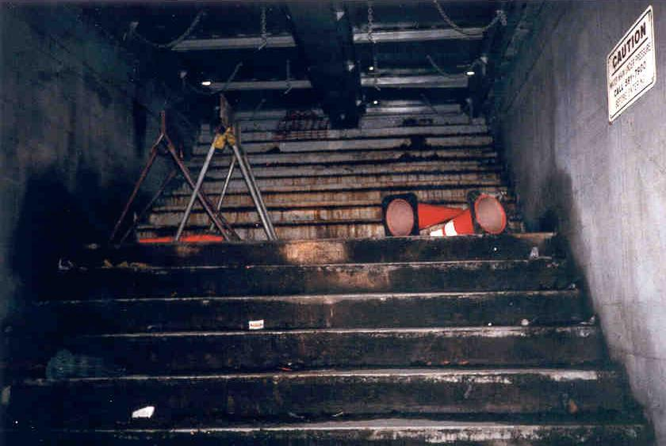
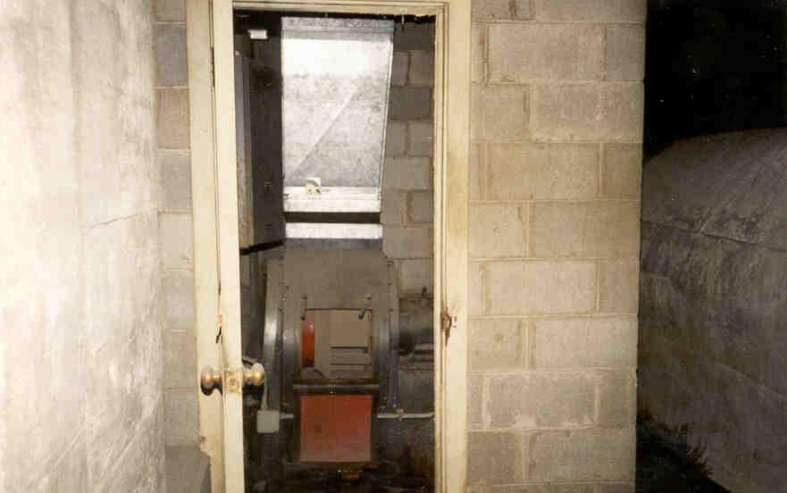
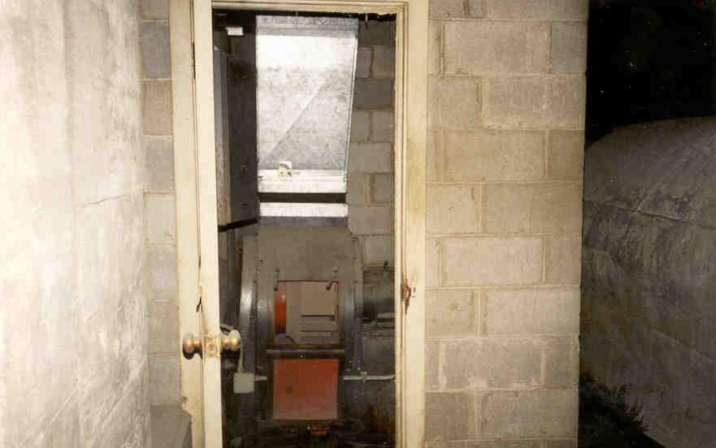

The third station (and, I'm ashamed to say, the last one we went to) is the coolest by far. In the 1950's this one was turned into a bomb shelter.
The layout of the shelter is a little hard to grasp; the dividing wall between tunnels was sealed and a heavy metal door was placed in it, and on the other side of this door, next to where the water main is now, we found both an old ventilation system of some kind in a closet and some broken, moldy food canisters.
On the other side is the shelter itself, standing on the platform with a chainlink fence keeping people from falling off. We just walked right up to it and climbed the ladder. If I had built this shelter I would have been a little more worried about marauding bands of mutants attacking from the tunnels.
The shelter is divided into rooms where people could sleep, eat, and play board games until the nuclear winter was over. In one of the rooms the metal-framed bunks are still standing.
The stairs to this one are still there, too, although they're back further and down a few halls. A piece of metal covers the opening, and it rattles every time a car drives over it. If I'm ever in Cincinnati when a nuclear holocaust happens, I know where I'm going.


The 1951 newspaper proposal which led to the conversion of station three into a bomb shelter.

 
